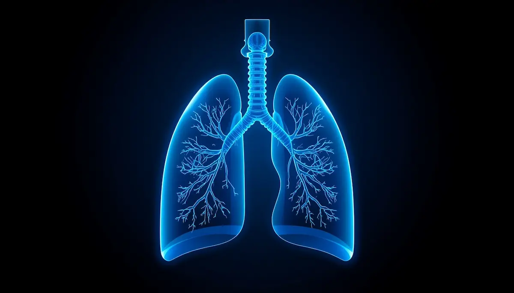

Respirar con confianza: asma infantil y alergias
Comprender el asma y las alergias respiratorias en la infancia requiere tranquilidad, información clara y una estrecha colaboración con el colegio. He querido reunir aquí una guía amable para disipar miedos, reconocer los desencadenantes y asegurar que cada niño respire con total libertad y seguridad. Pincha en cada tarjeta para profundizar en cada tema.
Aceptar sin alarmas
El diagnóstico de asma o alergia no limita los sueños de la infancia. Abordemos la noticia desde la serenidad, transformando el desconocimiento en rutinas de cuidado sencillas.
Descubrir más ➔
¿Qué ocurre en sus bronquios?
Entender la inflamación y la hiperreactividad bronquial nos ayuda a visualizar el problema con claridad, comprendiendo por qué el tratamiento preventivo es tan importante.
Descubrir más ➔Detectar las señales a tiempo
La tos persistente al correr, los pitidos al respirar o la opresión en el pecho son avisos para consultar con el pediatra o alergólogo y obtener un plan de acción personalizado.
Descubrir más ➔Controlar los desencadenantes
Ácaros, polen, humedad o humo de tabaco: conocer qué factores irritan las vías respiratorias en casa permite adaptar los espacios para proteger su salud pulmonar.
Descubrir más ➔Alianzas firmes con la escuela
El profesorado y el personal escolar deben conocer las pautas médicas del niño, saber usar el inhalador de rescate y garantizar un entorno libre de riesgos innecesarios.
Descubrir más ➔Deporte sin límites ni miedos
El asma no debe apartar al niño del juego ni del ejercicio. Con un buen calentamiento y la medicación preventiva adecuada, correr y nadar forman parte de su bienestar.
Descubrir más ➔Actuar con calma ante una crisis
Saber identificar una crisis asmática leve o moderada y aplicar el tratamiento pautado sin perder la serenidad transmite seguridad absoluta al menor en momentos clave.
Descubrir más ➔Autonomía y tranquilidad emocional
A medida que crecen, enseñarles a reconocer los síntomas de su cuerpo les otorga independencia, reduciendo la ansiedad familiar y fomentando una autoestima sólida.
Descubrir más ➔